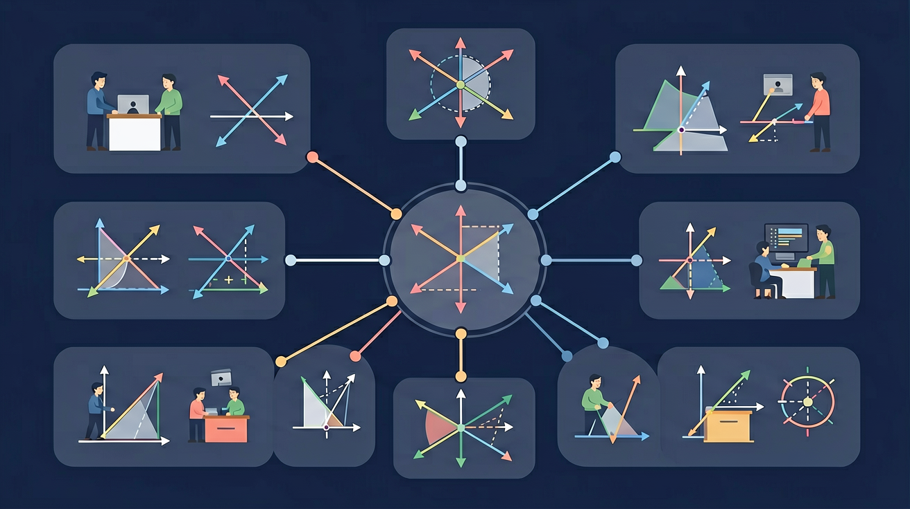

🎯 能说出相交线和平行线的定义及性质
🎯 能判断两条直线的位置关系（相交/平行）
🎯 能计算相交线形成的对顶角、邻补角度数
❓ 为什么两条直线相交后形成的角有的是90度有的不是？
❓ 平行线真的永远不会相交吗？
❓ 怎么判断两条线是不是平行线？
学完这一课，这些问题你都能自信地回答。
两条直线相交形成几个角？
下列哪组条件不能判定平行？
1. 两条直线相交形成几个角？
2. 互补的两个角之和为？
3. 平行线的符号是？
两直线相交，位置相对的两个角。
性质：对顶角相等（∠1=∠3，∠2=∠4）
相邻的两个角（共用一条边）。
性质：邻补角互补（相加=180°）
🏋️ 即时练习：两直线相交，若其中一个角为 70°，则它的对顶角为？
🏋️ 即时练习：若一个角为 70°，则它的邻补角为？
同位角
在截线同侧，位置相同（如都在截线左上方）
内错角
在两线之间，截线两侧（形状像"Z"）
同旁内角
在两线之间，截线同侧（形状像"U"）
🏋️ 即时练习：内错角位于截线的哪个位置？
① 同位角相等 → 两直线平行（简写：同位角相等，两直线平行）
② 内错角相等 → 两直线平行
③ 同旁内角互补（和为180°）→ 两直线平行
① 两直线平行 → 同位角相等
② 两直线平行 → 内错角相等
③ 两直线平行 → 同旁内角互补
🏋️ 即时练习：已知 a∥b，同位角 ∠1 = 65°，则 ∠2 = ？（∠1 和 ∠2 是同位角）
已知 a∥b，截线 c 与 a、b 相交，形成角 ∠1=50°（∠1 在直线 a 上方，截线 c 右侧）。
1. 对顶角的性质是？
2. 若同旁内角之和为 180°，则两直线？
3. 已知 a∥b，截线与 a 所成内错角为 75°，则截线与 b 所成内错角为？
4. 若两直线被截线截，内错角相等，则这两条直线？